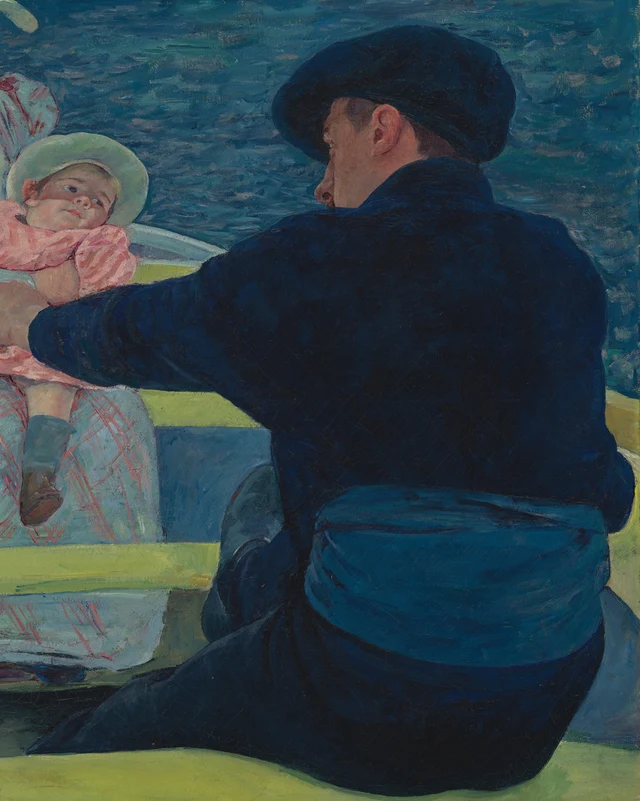
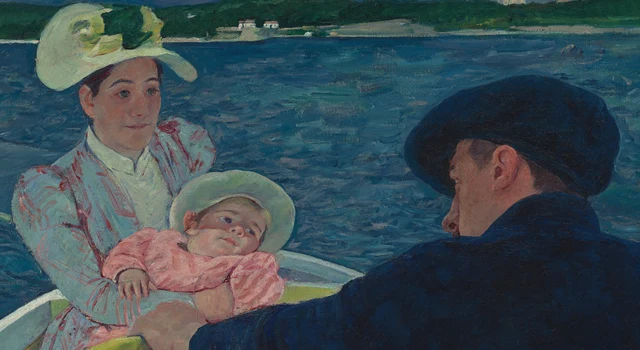
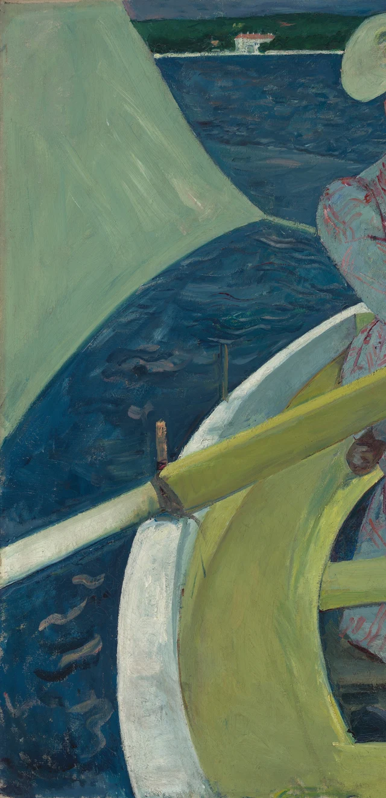

Commençons par la grande masse bleu sombre, à droite. Elle occupe presque toute la hauteur entre le milieu du tableau et son bord inférieur. Un bras robuste s’en détache et passe devant la femme et l’enfant, plus clairs, assis en face. Nous reconnaissons le dos d’un homme qui rame. Mais cette reconnaissance ne dégage pas la vue : son corps continue de nous cacher une partie de la barque. Sous la casquette, un profil n’apparaît qu’en partie. Avant de pouvoir lire une expression, nous rencontrons la présence physique de quelqu’un assis tout près. Suivons ensuite sa main vers le bas à gauche : une rame jaune-vert entraîne notre regard à l’intérieur de l’embarcation.

Peintre américaine ayant vécu une grande partie de sa vie en France, Cassatt participe à quatre expositions impressionnistes entre 1879 et 1886. Elle observe la vie moderne au théâtre, lors de sorties et dans les gestes quotidiens consacrés aux enfants. Ce tableau se rattache à son séjour à Antibes, sur la Méditerranée : le catalogue de la National Gallery of Art publié en 1970 indique qu’elle y passe un hiver et y peint l’œuvre. Repères biographiques ; Séjour à Antibes, pages imprimées 16 et 28
La lecture proposée ici prend appui sur ce dos qui s’interpose. Cassatt donne à une sortie en mer la consistance de plusieurs corps partageant un espace restreint. Tenir un enfant, manier une rame, garder son assise : chacun de ces gestes a sa direction, et tous doivent trouver place dans la même petite barque. Les couleurs lumineuses n’enlèvent rien au poids des corps. La proximité que nous ressentons comprend aussi cette nécessité très concrète de faire de la place aux autres.
1 Un dos qui occupe déjà la place
Le tableau mesure un peu plus d’un mètre de large. À l’échelle de l’original, l’homme de droite représente donc une présence considérable, bien loin d’une petite figure accessoire dans un paysage. Les épaules s’élargissent, le haut du dos se penche en avant, une ceinture d’un bleu plus vif entoure la taille, tandis que le bas du corps s’étend vers la gauche. Ces changements de direction donnent à sa position assise la tension d’un effort en cours.
Le dos lui-même contient des différences que sa masse sombre peut d’abord nous faire manquer. Des touches bleues suivent la manche ; la couleur n’a pas la même densité sur l’épaule et au milieu du dos ; la ceinture marque une séparation avec le bas du corps. À distance, ces variations se rassemblent dans une grande forme compacte. En face, des lignes roses divisent la robe bleu pâle de la femme, et le vêtement de l’enfant forme une tache rose plus lumineuse. Auprès de ces surfaces fractionnées, l’homme semble avancer vers nous d’un seul bloc.

Devant une peinture de figures, nous cherchons volontiers les visages. Or le personnage le plus grand nous tourne le dos. Son visage n’a pas entièrement disparu : l’oreille, le nez et une partie de la joue composent un profil particulier, mais les yeux se retirent sous la casquette. Notre attention passe ainsi de la personne à la forme qu’elle dessine. Nous commençons à chercher une expression ; la largeur du dos nous ramène aussitôt au premier plan.
Comparons sa tête à celle de l’enfant. Le visage de l’enfant se repère facilement, entouré d’un chapeau clair et de vêtements roses, sans être exactement au centre du tableau. La tête de l’homme est plus grande, mais son orientation et son obscurité la rendent moins lisible. La taille, la clarté et l’importance ne se rangent pas selon un ordre unique. L’enfant peut retenir notre premier regard sans que l’homme se réduise pour autant à une figure d’accompagnement.
Et nous, où sommes-nous placés ? Le bord inférieur coupe l’extrémité proche de la barque. À droite, aucun passage généreux ne permet d’imaginer que nous contournions aisément le rameur. Nous regardons aussi légèrement d’en haut : nous voyons les jambes, les traverses et quelques morceaux du fond. Ce point de vue nous rapproche d’un autre passager, sans qu’on puisse reconstituer avec certitude le siège qu’il occuperait. Le tableau ne nous réserve pas le centre. Il nous invite à trouver nos repères dans un espace déjà habité, où les gestes ont commencé avant notre arrivée.
2 La rame rapproche deux gestes
En suivant le bras tendu, nous atteignons la main qui serre la rame. Le bois jaune-vert descend en diagonale vers la gauche, franchit le bord blanc de la barque et se prolonge hors du cadre. Plus bas, une traverse de couleur voisine passe presque à l’horizontale. Au premier regard, leur ressemblance peut les fondre dans un même motif décoratif. Les distinguer fait apparaître un mouvement oblique à travers une structure plus stable.
La rame a une véritable largeur dans l’image. Son arête supérieure, un peu plus claire, la détache des espaces qu’elle traverse, entre l’eau, le bord de la barque et la robe. À son extrémité haute, la main rejoint le bord sombre de la manche. Le tissu, la peau et le bois se succèdent sur une très courte distance, avec de nets passages du foncé au clair. La prise de la main devient sensible dans cet assemblage de matières peintes.

Tout près de cette main, un autre travail se poursuit. La femme tient l’enfant contre elle. Sa manche bleu pâle passe devant le petit corps, qu’une main soutient de l’autre côté. L’enfant s’appuie de biais, la tête inclinée vers la droite du tableau, une main posée sur la manche. Les jambes pendent, et les deux chaussures brunes ne sont pas à la même hauteur. Ce décalage donne au petit corps un poids tangible, porté par les bras de la femme.
Le soin prend ici une forme précise. L’enfant ne se dispose pas bien droit dans le prolongement du torse plus vertical de la femme. Le bras doit passer en travers et retenir cette inclinaison. Un visage peut rester calme tandis qu’un bras continue à travailler. Avant même d’attribuer à la femme un sentiment particulier, nous voyons ce qu’exige le fait de tenir quelqu’un : une position à maintenir et à ajuster.
Ramer et soutenir l’enfant demeurent deux gestes distincts, dont les contours se touchent presque. La main de l’homme est devant ; la manche claire et le vêtement rose viennent derrière. La rame prend de la place près des petites jambes, et une chaussure s’approche du côté de la barque. La sortie acquiert ainsi sa densité physique. Nous sentons les personnes proches parce que leurs gestes doivent tous se loger dans ce même intérieur limité.
Le tableau ne montre ni le coup de rame précédent ni celui qui suivra. La pale reste hors champ ; nous n’avons pas de quoi calculer la vitesse de la barque. Mais le bras avancé, le torse incliné et les jambes qui descendent inscrivent déjà plusieurs directions d’effort dans l’image immobile. Les traverses et les côtés courbes les contiennent. La stabilité que nous éprouvons vient de ces mouvements différents qui, pour un instant, tiennent ensemble.
3 Des visages voisins et des liens dans les gestes
Remontons vers les têtes. Celle de la femme reste relativement droite ; celle de l’enfant s’incline ; l’homme tourne son profil vers l’intérieur de la barque. Sur le fond bleu de l’eau, les deux chapeaux clairs, l’un grand et l’autre petit, se détachent à des hauteurs différentes. La casquette sombre remonte un peu sur la droite. Cette succession irrégulière conduit l’œil d’une personne à l’autre, sans les aligner sur une même horizontale.

La femme et l’enfant semblent regarder vers l’homme, peut-être juste à côté de lui. Cette petite différence mérite de rester ouverte. Une direction commune ne suffit pas à prouver que les regards se rencontrent, surtout lorsque les yeux de l’un des personnages nous échappent. Décider trop vite que ces visages expriment le bonheur, l’inquiétude ou la distance affective ferait manquer une possibilité plus riche : des personnes peuvent être très proches par le corps et par l’organisation de leurs gestes, sans que leurs visages livrent un message commun.
Le visage de l’enfant nous retient particulièrement. La joue est ronde, la tête penchée, les yeux tournés de côté ; la bouche ne s’ouvre pas en un sourire indiscutable. On peut y voir de la somnolence ou une attention portée ailleurs. Quelle que soit notre impression, la main reste posée sur la manche et les jambes continuent de pendre. L’expression nous attire vers la figure ; la posture prolonge le temps que nous lui accordons.
La scène appartient à un type de sujet souvent désigné comme « mère et enfant ». Toutefois, les documents disponibles sur l’œuvre ne confirment pas les liens de parenté entre les trois modèles. Une femme qui porte un enfant et un homme qui rame nous donnent déjà assez pour entrer dans le tableau. Le soin devient concret à l’endroit où passe la manche, dans la manière dont la main reçoit le poids. La relation visible se maintient d’abord par ce que font les corps.
Les vêtements prolongent cette relation. De fines lignes roses, irrégulières, parcourent le fond bleu pâle de la robe. Elles se resserrent à la poitrine, s’écartent sur les genoux et tournent avec la jupe. Tout en décrivant les plis, elles font circuler le rose de l’enfant sur une surface beaucoup plus grande. Le contact entre les corps trouve ainsi un écho dans la répétition des couleurs.
Sous le rose, la manche bleu sombre nous ramène à l’homme. Bien qu’il nous tourne le dos, son bras entre dans ce voisinage de teintes et le relie aux deux autres figures. L’ensemble n’a pas besoin de trois expressions semblables pour tenir. La proximité peut se développer au-delà de ce que raconterait une anecdote immédiatement déchiffrable.
4 La mer monte et la barque se déploie
Après les personnages, accordons un peu de temps à l’eau. Le rivage lointain frôle le haut du cadre. Les arbres forment une mince bande verte, ponctuée de quelques maisons pâles. Le ciel n’a presque plus de place pour s’ouvrir. La mer, qui devrait entraîner l’œil vers le lointain, se présente alors comme une vaste surface bleue au contact des chapeaux, des épaules et de la voile.
Elle conserve pourtant ses variations. Des touches courtes et claires se posent sur l’eau, tantôt presque horizontales, tantôt courbées, laissant entre elles un bleu plus profond. Près du bord gauche de la barque, nous pouvons suivre plusieurs marques séparément ; vers le rivage, elles se rapprochent. Une distance continue de se lire, tandis que l’étendue de la couleur nous reconduit vers la surface du tableau.
La voile de gauche accentue ce mouvement. Une grande plage gris-vert clair entre par le bord du cadre et se resserre vers une pointe à droite ; son bord inférieur repart en oblique vers le bas à gauche. Au-dessous, le côté de la barque remonte en deux courbes de largeurs différentes, l’une blanche et l’autre jaune-vert. Entre la voile et ce bord reste une bande d’eau bleue, dont la forme est découpée par les contours voisins.

Ces courbes conduisent le regard vers l’intérieur ; de l’autre côté, le dos de l’homme l’arrête. La voile claire et le corps sombre entrent depuis deux bords opposés. Leur forme et leur poids diffèrent, mais ils laissent ensemble à la femme et à l’enfant un passage central plus étroit. Le cadre paraît plein. Des intervalles bleus restent néanmoins visibles entre les épaules et les chapeaux : cette proximité serrée garde des ouvertures.
En 1890, Cassatt voit à Paris une exposition d’estampes japonaises, puis réalise elle-même une série d’estampes en couleurs. Cette expérience éclaire son intérêt pour les contours affirmés, les grandes plages colorées et les points de vue obliques ; la National Gallery of Art rapproche également cette œuvre des estampes japonaises. Contexte de l’œuvre gravé ; Commentaire du musée Sans supposer un modèle direct qui ne serait pas documenté, nous pouvons observer dans le tableau deux organisations simultanées : la barque s’enfonce dans la profondeur, tandis que ses couleurs se déploient sur la toile.
Le terme d’« aplatissement » demande donc quelques précautions. L’enfant se trouve devant la femme, l’homme devant tous deux. La rame passe par-dessus le bord ; une traverse masque une partie de la robe ; le fond de la barque n’apparaît que dans de petites ouvertures. Les rapports d’avant et d’arrière restent précis. C’est leur rythme qui se modifie : chaque fois que l’œil s’engage vers l’intérieur, les grandes surfaces jaune-vert, bleu profond et rose l’entraînent de nouveau latéralement. La profondeur et la surface se sollicitent l’une l’autre. La barque accueille les corps tout en devenant une forme qui remplit fermement le tableau.
Revenons une dernière fois au dos sombre. Il pouvait d’abord sembler un obstacle massif. À présent, la main, la rame, la ceinture, la chaussure de l’enfant et le côté courbe de la barque le relient à tout ce qui l’entoure. Son poids donne aux formes plus claires et plus légères un voisin contre lequel prendre place. C’est là que La Partie de bateau prend toute sa force : une sortie apparemment légère devient un espace que plusieurs corps maintiennent ensemble. À cette distance, notre regard doit encore faire place aux corps déjà présents.
Lecture facultative Revenir à bord avec SAE
SAE, Self-as-an-End, permet de s’arrêter tour à tour sur « j’aime cette couleur » et sur « comment cette couleur se présente-t-elle ? ». Dans la seconde question, nous pouvons prendre le temps d’observer les largeurs, les valeurs claires et sombres, les bords et les formes voisines, avant d’identifier le bleu à la mer ou le bleu sombre à un vêtement. La beauté de la perception
Essayons un aller-retour très concret. Regardons d’abord le détail du dos, figure 2, puis le tableau entier. Dans le recadrage, la masse sombre peut ressembler à un mur qui envahit la vue. Dans l’ensemble, la voile claire, la courbe jaune-vert et le rose du centre lui donnent un autre poids. Le dos n’a pas changé de couleur ; les relations visibles ont changé. « Lourd » devient alors une impression dont nous pouvons discuter à partir d’éléments que chacun peut désigner : une surface occupée, une clarté voisine, une vue partiellement barrée.
Reconnaître une rame et imaginer le sens de l’effort dans une main qui la serre font déjà appel à notre expérience. Le titre aura peut-être fait attendre une promenade dégagée, tranquille, où chacun serait facile à voir. La mer placée très haut et le grand dos peuvent ensuite nous obliger à revoir cette attente. Les analyses de SAE sur la mémoire et l’anticipation aident ici à suivre la façon dont une première image mentale se réorganise à mesure que de nouveaux détails apparaissent. La beauté de la cognition
Ce déplacement ne sera pas le même pour tout le monde. Certains auront regardé d’abord le bleu profond, d’autres l’enfant. Une expérience plus précise reste possible : suivre la rame jusqu’à la main, puis la manche de la femme jusqu’au corps qu’elle porte. En revenant à la vue complète, sentons-nous mieux combien l’intérieur est serré, comment un corps en soutient un autre et quelle place chacun doit lui laisser ? Si oui, la théorie aura donné plus de précision à une impression générale d’intimité, en nous aidant à regarder cette présence partagée.
À propos des images et des sources
Les observations visuelles de cet essai reposent sur l’image officielle de 4096 × 3136 pixels fournie par la National Gallery of Art. La vue complète conserve le fichier téléchargé sans modification. Les quatre détails sont uniquement des recadrages rectangulaires, sans correction des couleurs, accentuation de la netteté, restauration, ajout pictural ni contenu généré. L’affichage des couleurs, le degré d’agrandissement et les conditions de vision à l’écran diffèrent de ceux de l’œuvre originale.
L’image relève de la politique d’accès ouvert CC0 du musée. Cette licence ne couvre pas les textes modernes de recherche. Les faits historiques nécessaires sont accompagnés de leurs sources. La lecture centrale est une interprétation contemporaine, qui ne se présente ni comme une déclaration de l’artiste ni comme une prise de position du musée. Voir les références et les sources et licences des images.